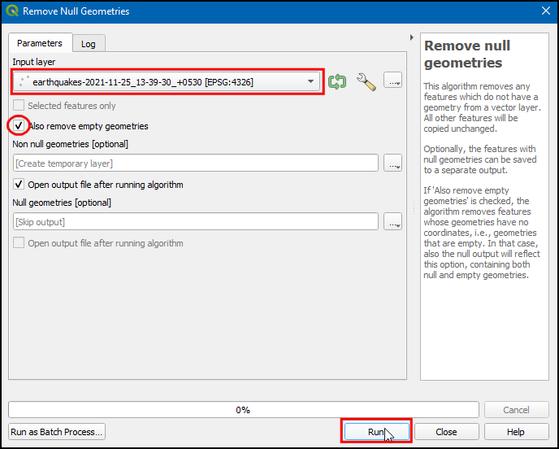
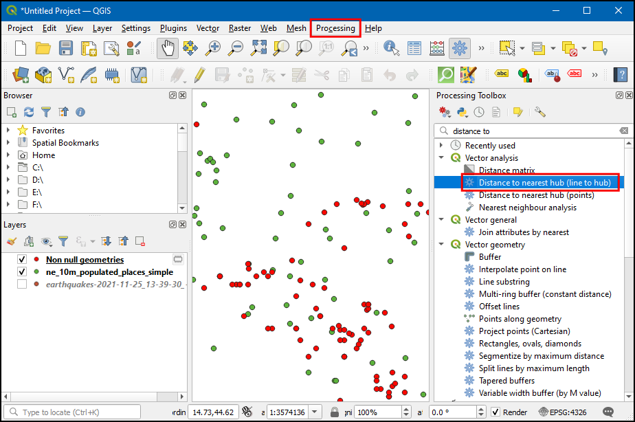
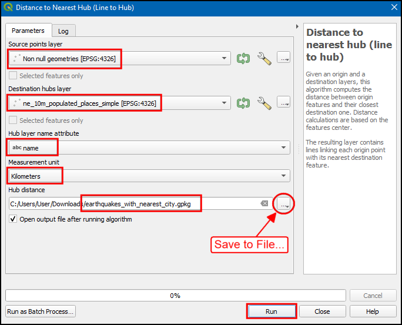
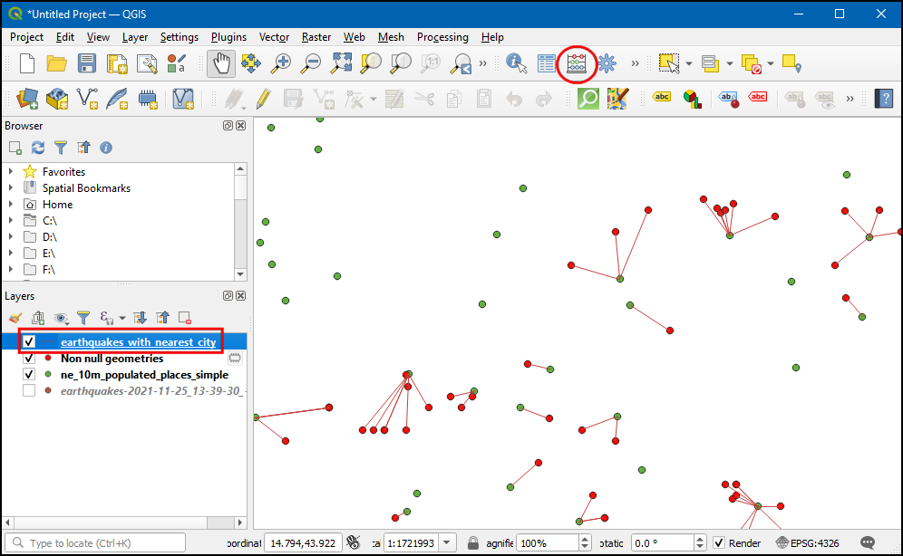

Ujaval Gandhi
Ujaval GandhiAnaliza najbližjih sosedov (QGIS3)¶
GIS je zelo uporaben pri analizi prostorskih odnosov med značilnostmi. Ena takih analiz je ugotavljanje, katere značilnosti so najbližje določeni značilnosti. V QGIS lahko to analizo opravite na več načinov. Prostorsko združitev lahko izvedete z orodjem Join Attributes by Nearest ali pridobite razdalje do vseh elementov iz drugega sloja z orodjem Distance Matrix iz zbirke orodij za obdelavo. V tem vodniku bomo raziskali orodje z imenom Distance to nearest hub iz orodjarne Processing Toolbox, s katerim lahko ne le poiščete razdaljo do najbližjega elementa, temveč se mu za vizualizacijo rezultatov pridružite s črto.
Pregled naloge¶
Glede na lokacije vseh znanih potresov med letoma 1900 in 2000 poiščite najbližje naseljeno mesto za vsako lokacijo, kjer se je zgodil potres.
Pridobivanje podatkov¶
V tej vadnici bomo prenesli nabor podatkov o potresih med letoma 1900 in 2000 iz Nacionalnega centra za geofizikalne podatke agencije NOAA, ki je pripravil odličen nabor podatkov o vseh pomembnih potresih od leta 2150 pred našim štetjem. obiščite portal NOAA NCEI <https://www.ngdc.noaa.gov/hazel/view/hazards/earthquake/search>`_ in vnesite Min kot
1900in Max kot2000. Tako boste dobili vse potrese, ki so se zgodili in jih je NOAA zabeležil med tema letoma. Za druge specifične rezultate lahko filtrirate z različnimi parametri. Kliknite :guilabel:Search.

Posledično smo dobili 2585 potresov. Kliknite ikono Download TSV.

Natural Earth ima lepo zbirko podatkov Populated Places. Prenesite simple (less columns) dataset
Zaradi priročnosti lahko kopijo obeh zbirk podatkov neposredno prenesete s spodnjih povezav:
earthquakes_2021_11_25_14_31_59_+0530.tsv
ne_10m_populated_places_simple.zip
Viri podatkov: [NCEI] [NATURALEARTH]
Postopek¶
Poiščite preneseno datoteko
ne_10m_populated_places_simple.zipna plošči Browser in jo razširite. Datotekone_10m_populated_places_simple.shppovlecite na delovno površino.

Na plošči Layers boste videli naloženo nov sloj
ne_10m_populated_places_simple. Ta sloj vsebuje točke, ki predstavljajo naseljena mesta. Zdaj bomo naložili sloj potresi. Ta sloj je na voljo kot Tab Serepated Values (TSV) besedilna datoteka. Če želite naložiti to datoteko, kliknite gumb Open Data Source Manager na plošči Data Source Toolbar. Uporabite lahko tudi Ctrl + L bližnjico na tipkovnici.

V pogovornem oknu Data Source Manager izberite Delimited Text.

Kliknite gumb … poleg File name in poiščite preneseno datoteko
earthquakes-2021-11-25_13-39-30_+0530.tsv. Odvisno od operacijskega sistema morda datoteke ne boste videli v prenesenem imeniku. V tem primeru v pogovornem oknu All files (*; .) preklopite na Choose a Delimited Text File to Open. Po odprtju izberite Custom delimiters v razdelku File format in označiteTab. V razdelku Geometry definition (Opredelitev geometrije) izberite Point coordinates (Koordinate točke). Privzeto bosta vrednosti Polje X in Polje Y samodejno napolnjeni z ustreznimi polji v vnosu. V našem primeru sta toLongitudeinLatitude. Polje Geometry CRS lahko nastavite na privzeto vrednostEPSG:4326 - WGS 84CRS. Če vaša datoteka vsebuje koordinate v drugem CRS, lahko tukaj izberete ustrezen CRS. Kliknite Add in nato Close.

Povečajte in raziščite oba podatkovna niza. Vsaka rdeča točka predstavlja lokacijo potresa, vsaka zelena točka pa lokacijo naseljenega kraja. Naš cilj je, da za vsako točko v sloju potresov poiščemo najbližjo točko iz sloja naseljenih krajev. Preglejmo tabelo atributov sloja potresov. Izberite sloj in kliknite na ikono Open Attribute Table (Odpri atributno tabelo) v Toolbar (Orodna vrstica).

Obstaja
2586funkcij, vendar podatki vsebujejo le nekaj vnosov brez podatkov o zemljepisni širini ali dolžini. To moramo odstraniti, preden nadaljujemo z delom. Zaprite tabelo atributov.
Pojdite na orodje . Dvakrat kliknite, da ga odprete.

V pogovornem oknu Remove Null Geometries (Odstrani ničelne geometrije) izberite
earthquakes-2021-11-25_13-39-30_+0530kot Input layer (Vhodna plast) in potrdite polje Also remove empty geometries (Odstrani tudi prazne geometrije). Kliknite Run. Ko se obdelava konča, kliknite Close.

Na ploščo Layers bo dodan nov sloj
Non null geometries. Za analizo bomo uporabili ta sloj namesto prvotnega sloja. Slikoearthquakes-2021-11-25_13-39-30_+0530na plošči Layers` odkljukajte, da jo skrijete. Izberite plastNon null geometriesin kliknite gumb Open Attribute Table (Odpri tabelo atributov) v orodni vrstici Attributes Toolbar (Orodna vrstica atributov).

Videlo se bo manjše število vseh elementov, saj so bile odstranjene vse vrstice s praznimi vrednostmi zemljepisne širine in dolžine. Zaprite tabelo atributov.

Zdaj je čas za analizo najbližjega soseda. Poiščite in poiščite orodje . Z dvojnim klikom ga zaženite.

Opomba
Kot izhod lahko dodamo tudi plast točk, za kar uporabite orodje Distance to nearest hub (points).
V pogovornem oknu Distance to Nearest Hub (Line to Hub) izberite
Non null geometrieskot Source points layer. Izberitene_10m_populated_places_simplekot sloj Destination hubs layer. Izberitenamekot atribut Hub name layer. Orodje bo izračunalo tudi neposredno razdaljo med naseljenim krajem in najbližjim potresom. Kot Measurement unit (merilna enota) nastaviteKilometers. Kliknite na...v polju Hub Distance` in kliknite Save to File…`, da shranite datoteko kotearthquakes_with_nearest_city.gpkg. Kliknite Run. Ko se obdelava konča, kliknite Close.

V glavnem oknu QGIS boste videli, da je na plošči Layers naložena nova vrstica z imenom
earthquakes_with_nearest_city. Ta sloj ima linijske elemente, ki povezujejo vsako potresno točko z najbližjim naseljenim mestom. Izberite slojearthquakes_with_nearest_cityin kliknite ikono Open Attribute Tabel v Toolbar.

Pomaknite se desno do zadnjih stolpcev in videli boste dva nova atributa, imenovana HubName in HubDist, ki sta dodana prvotnim značilnostim potresa. To je ime razdalje do najbližjega soseda iz sloja naseljenih krajev.

If you want to give feedback or share your experience with this tutorial, please comment below. (requires GitHub account)